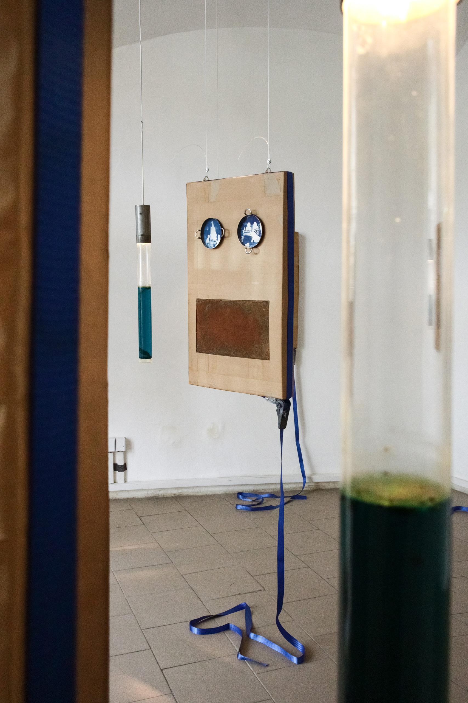
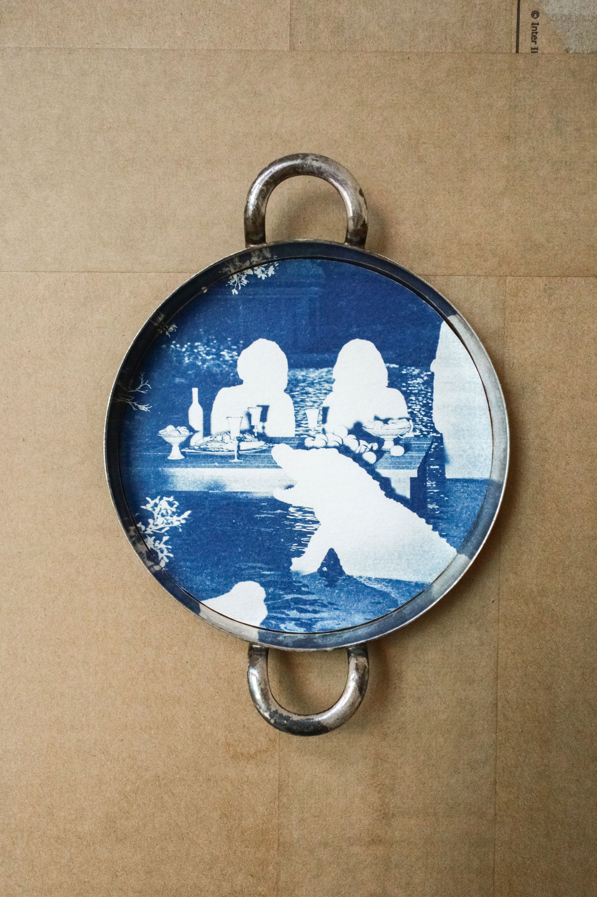
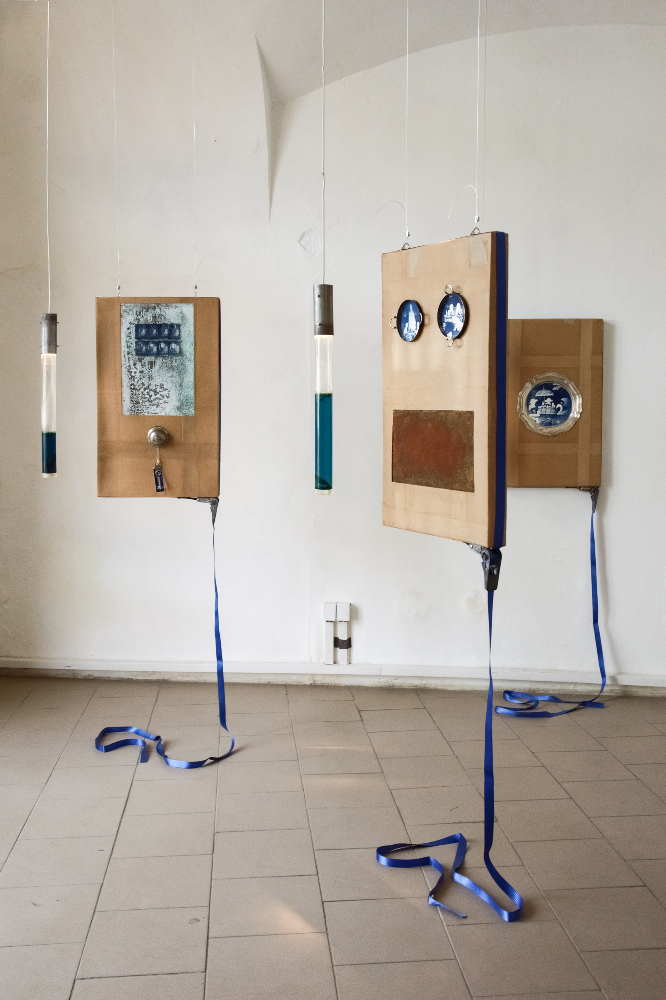

Anonymous Hospitality Episode 3, Brno 2026
installation, cardboard-metal canvases 80 × 40 cm w/artificial patina, metal plates with cyanotypes dimensions variable, lamps filled with a blue brine.
The project rethinks the phenomenon of the archive’s wildness and the fear of its totality. The “crazy archive” – a term borrowed from artist Agnieszka Polska – describes a specific state of memory in the post-socialist context: an autonomous environment where historical material exists as a blend of memories, fabulations, and reconstructions, constantly reassembling itself. Rather than attempting to interpret or organize this field, the project explores the possibility of coexisting with its instability. The key principle is “starting from scratch” – understood not as rupture, but as a model of coexistence with the totality of the crazy archive and the building of a relationship with the Other through ritual. This unfolds through a strategy of mutual auto-archiving in conditions of anonymous hospitality, where participants preserve their otherness while engaging in an exchange of experience.
A feast is a scene of anonymous coexistence where hierarchies of host and guest, past and present, familiar and foreign are temporarily suspended – a carnival in Mikhail Bakhtin’s terms, where the possibility of something strange always lingers beneath the ordinary. Ancient Greek myths of sacred hospitality (theoxenia) carry a similar logic: the host must offer the stranger a place at the table without asking who they are, for the guest may turn out to be a spirit, a god in disguise, or a deceased relative. Working with an archive of found feast images, I reduce them to the ritual they depict: figures lose their individual features through 3D reconstruction and cyanotype, becoming white silhouettes – traces of absence, gaps in memory.
Domestic preserves and blue brine in the lamps function as a metaphor for the archive: objects lose their original form but persist as gesture, taste, and ritual – a form of hospitality deferred in time. The guest’s otherness takes on a bureaucratic dimension through the story of obtaining an EU dog passport, where identity is formally recorded and exists primarily as a document. The paradox: this hybridity – a shift toward the animal – opens access to mobility and anonymity where the human document fails. The figure draws on St. Christopher with a dog’s head, patron saint of travelers, who carried his otherness literally and whose identity existed in three contradictory versions simultaneously.
exhibition A Little Bird Told Me


